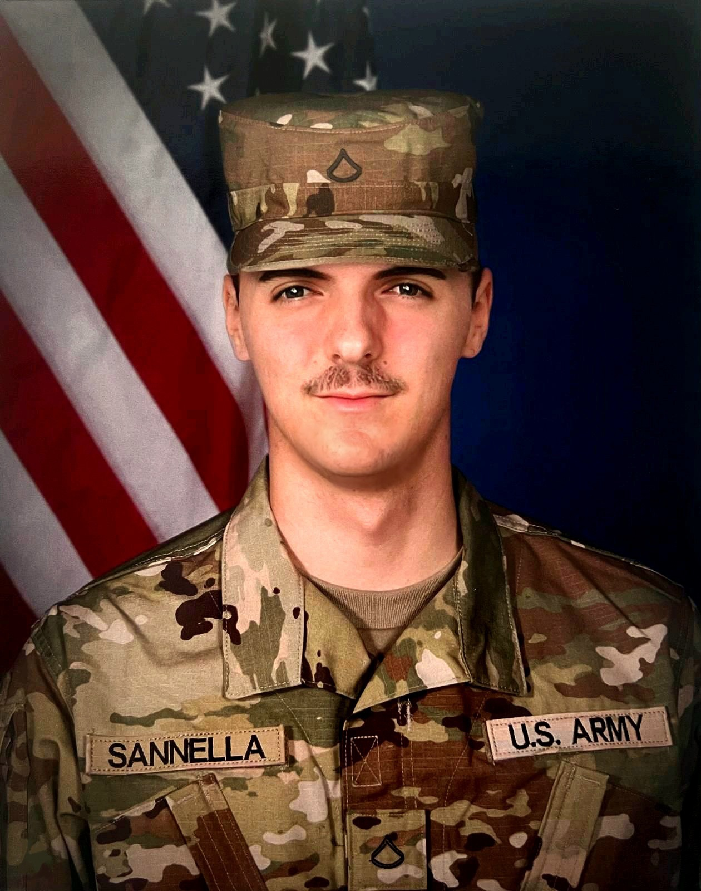

Service revealed the problem.
Leadership built the solution.
NextLine Health Group was founded by a veteran who saw firsthand the persistent gap between the support systems that exist on paper and the reality of what individuals actually receive.
Across both military and law enforcement service, one truth remained constant: resources alone do not create outcomes. Structure, trust, consistency, and direct human engagement do.
NextLine Health was created to strengthen that missing layer — improving continuity, accountability, and engagement for those navigating behavioral health and support systems under real-world stress.


JORDI ENRIC SANNELLA
I built NextLine Health based on firsthand experience in both military and law enforcement environments, where accountability, consistency, and follow-through are mission-critical.
In those roles, I repeatedly saw the same problem: resources often existed, but access, continuity, and trust were inconsistent — especially for those operating under pressure.
This company was built to address that operational gap.
NextLine Health is grounded in real-world behavioral support infrastructure, designed to strengthen systems rather than replace them.
Our objective is clear: ensure that those who have served — and the broader populations that need support — are backed by systems that function with the same reliability they were trained to uphold.